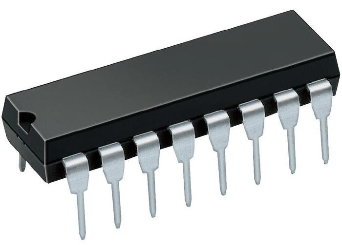
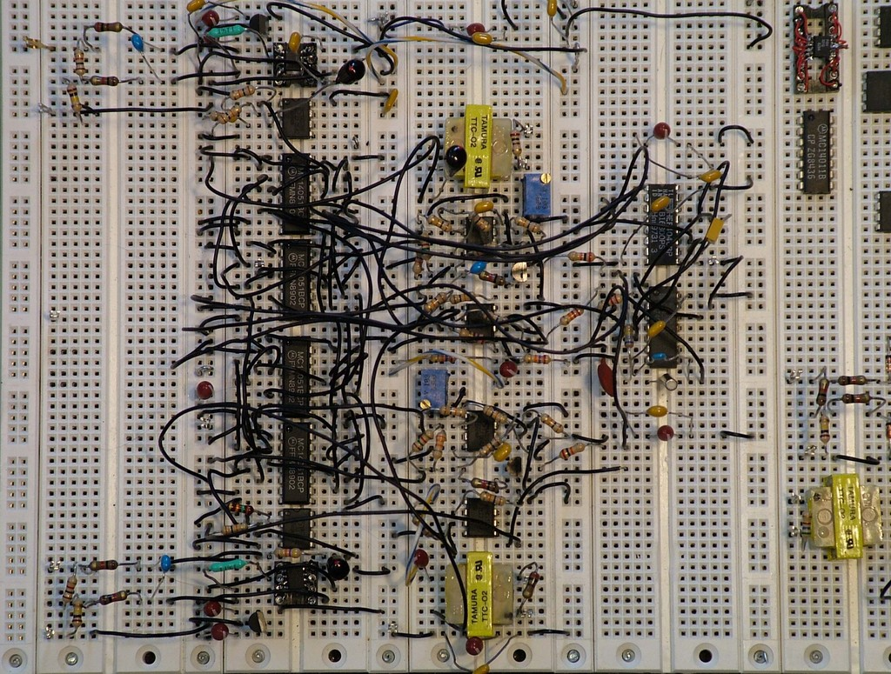
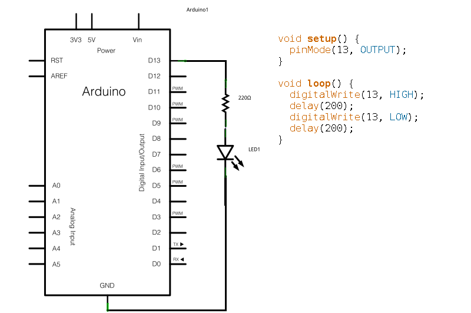
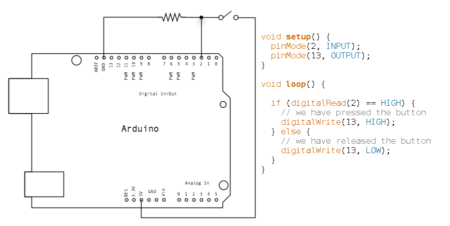

- Some of my projects
- Physical Computing - theory
- The Arduino
- hardware / electronics
- programming
- Hands on: get those plants talking!
Plus a pizza-break around dinner time..
Plus a pizza-break around dinner time..
Multi-threaded banjo dinosaur knitting adventure 2d extreme!!!

IkPod demonstration from Mediamatic Lab on Vimeo.







Let's install the software and do some basic circuits

